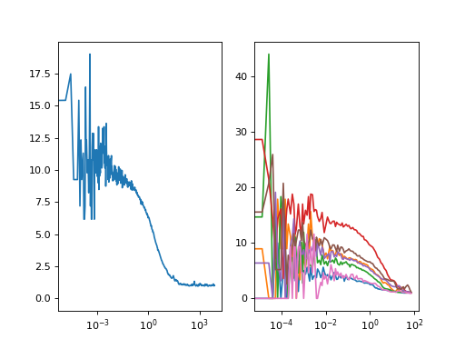

Fluorescence correlation¶
Creating correlators¶
tttrlib offers a set of correlators via a unified interface for correlations
of TTTR data. To correlate TTTR objects, first a TTTR dataset should be
loaded. Next, a Correlator object needs to be created. There are different
options to create a Correlator object. The default correlator implements a
multi-tau algorithm [WGPE03] [LFH06]. Some options of the
correlator are outlined in the code block below:
import tttrlib
data = tttrlib.TTTR('./examples/BH/BH_SPC132.spc', 'SPC-132')
# option 1
correlator_1 = tttrlib.Correlator()
# option 2
correlator_2 = tttrlib.Correlator(
tttr=data
)
# option 3
ch1, ch2 = [8], [0]
tttr_ch1 = tttrlib.TTTR(data, data.get_selection_by_channel(ch1))
tttr_ch2 = tttrlib.TTTR(data, data.get_selection_by_channel(ch2))
correlator_3 = tttrlib.Correlator(
tttr=(tttr_ch1, tttr_ch2),
make_fine=True # True the full-correlation, False only macro times.
)
# option 4
ch1, ch2 = [8], [0]
correlator_4 = tttrlib.Correlator(
tttr=data,
channels=(ch1, ch2),
make_fine=True # True the full-correlation, False only macro times.
)
# specify macro times and weights for option 5, 6, and 7
# this returns the indices with corresponding the channel numbers
ch1_indeces = data.get_selection_by_channel([8])
ch2_indeces = data.get_selection_by_channel([0])
t1 = data.macro_times[ch1_indeces]
w1 = np.ones_like(t1, dtype=np.float)
t2 = data.macro_times[ch2_indeces]
w2 = np.ones_like(t2, dtype=np.float)
# option 5
correlator_5 = tttrlib.Correlator(
'macro_times': (t1, t2),
'weights': (w1, w2),
)
# option 6
correlator_6 = tttrlib.Correlator()
correlator.set_macrotimes(t1, t2)
correlator.set_weights(w1, w2)
# option 7
correlator_6 = tttrlib.Correlator()
correlator.set_events(t1, w1, t2, w2)
Option 1 creates a Correlator object with default parameters. When constructing
a correlator this way, all data inputs need to be specified manually. This way
of creating a correlator provides the most flexibility. The other options are
there for convenience. Option 2 creates a correlator that is aware of a TTTR
object. No further information is provided to the correlator. Hence, all events
reagrdless of the channel number will be correlated with equal weight. Option 3
computes a cross-correlation function (CCF) of two TTTW objects. Using option 3
Option 4 will compute the CCF between two channels as defined by the channels
argument for the provided TTTR data set. When option 3 or 4 are used and the
(optional) parameter (default is False) make_fine is set to True will
correlator computes a full correlation considering the micro times of the TTTR
objects. The fifth presented option initializes the correlator with a set of
macro times with corresponding weights. The equivalent options 5, 6, and 7 are
the most versatile, as the macro times and the weights can be set manually.
The correlation will be computed when the correlation amplitude, that is accessed
via the correlation attribute of the correlator is accessed.
import tttrlib
data = tttrlib.TTTR('./examples/BH/BH_SPC132.spc', 'SPC-132')
ch1, ch2 = [8], [0]
correlator_4 = tttrlib.Correlator(
tttr=data,
channels=(ch1, ch2)
)
correlation_time = correlator_ref.x_axis
correlation = correlator_ref.correlation
Note
When a correlator is created using a TTTR object, the correlation time axis will be calibrated, i.e., the correlation axis will correspond to a real time axis. Otherwise, the time axis is in units of the macro time clock. This is the case for the fifth option above.
Correlators options¶
The default correlation algorithm follows a multi-tau correlation algorithm. Here,
two parameters control the correlation range, i.e, the maximum correlation time
and the number of correlation points: n_bins and n_casc. In a multiple
tau correlator the spacing of the correlation time axis increases from block to
block, e.g., ((1, 2, 3, 4), (6, 8, 10, 12), …). Here, n_bins is the number
of correlation points is a block and n_casc is the number of correlation
blocks. The parameters can be set upon creation of a correlator or by changing
the corresponding attributes after creation of a Correlator object.
The parameter/attribute method is used to specify the actual correlator that
is used.
import tttrlib
correlator = tttrlib.Correlator(
n_bins=17,
n_casc=25,
method='default',
)
correlator.n_bins = 17
correlator.n_casc = 25
correlator.method = 'lamb' # based on source code of the Lamb group
Examples¶
Below are a few examples how the correlator con be used in conjuncture with tttrlib. The given examples can be used as templates to develop other correlation analysis procedures.
Normal correlations¶
As described previously there are several analogous possibilities to compute correlations. Two possibilities are shown in the example below.
(Source code, png, hires.png, pdf)
{kind=link}
{kind=link}

Analysing such correlation functions informs on diffusion and fast kinetics. Such correlation functions can be analyzed by dedicated open tools for fluorescence such as ChiSurf, PyCorrFit, and PAM or generic curve analysis software.
Count rate filer¶
Low count rate parts of a TTTR file can be discriminated. The example below displays the correlation analysis of a single molecule FRET experiment. Note, the background has a significant contribution to the unfiltered correlation function. The example uses a sliding time-window (TW). TWs with less than a certain amount of photons are discriminated by the selection.
(Source code, png, hires.png, pdf)
{kind=link}
{kind=link}

Such a filter can be used to remove the background in a single-molecule experiment that decreased the correlation amplitude.
Micro time gating¶
(Source code, png, hires.png, pdf)
{kind=link}
{kind=link}

Note
The micro time gating example can be easily modified to correlate the prompt and the delayed excitation in a pulsed interleaved excitation experiment by changing the selection on the weights.
Full correlation¶
When processes faster than the macro time clock are of interest, the micro time and the macro time can be combined into a united time axis. Using the combined time axis a so called full correlation can be performed using cw excitation.
(Source code, png, hires.png, pdf)
Above is an example how a full correlation can be computed. Note, in the example the full correlation is computed for a sample that was measured in a pulsed excitation experiment. However, the same procedure can be applied to cw data.
Slice and correlate¶
In some cases it can be advantages to slice the data into sub-sets and correlate the subsets individually in particular if the average intensity in the sample is not stable, e.g. when measuring in cells.
(Source code, png, hires.png, pdf)
{kind=link}
{kind=link}

The By comparing the correlations of the subsets a filter can be defined that discriminates outlines. For details on how such a filter can be determined see [RBC+10].
Lifetime filters¶
Estimating the noise of the correlation curves¶
There are many approaches to calculate the noise in correlation functions (see: [WRV01], [Qia90], [SRB01]). An analytical calculation of the noise is not possible because it involves diverging integrals for the correlations decaying functions [WRV01]. For TTTR data an analytical solution of the noise in the correlation is however not necessary, as the data contained in the photon stream can be split to yield a set of correlation functions that is used to yield an estimate for the expected correlation function and the associated noise by the mean and the standard deviation.
TODO:
import tttrlib
The data passed to the correlator is splitted into @param n_split pieces. The individual correlations are used to calculate a set of correlation curves. In subsequent processing steps, the set of correlation curves can be used to estimate the the mean correlation and the standard deviation of the correlation curves.